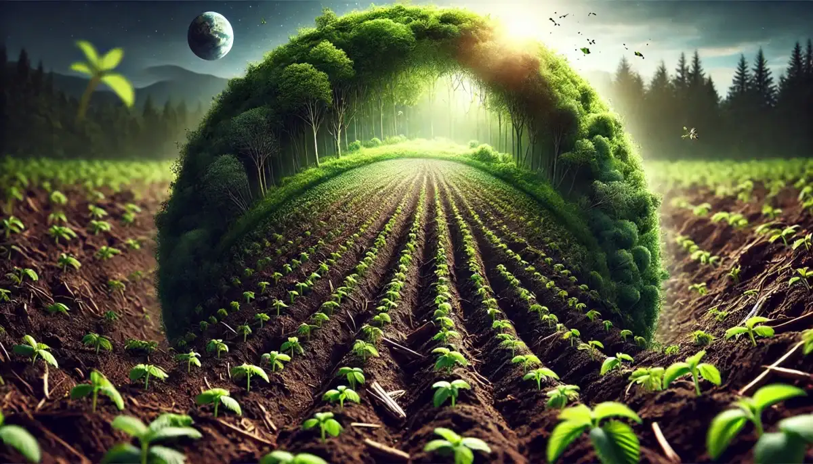

O agonegócio é um dos principais pilares da economia brasileira, garantindo a segurança alimentar e grande milhões de empregos. Contudo, o grande desafio da atualidade não reside apenas expandir a peodução, mas em consolidar um modelo de desenvolvimento que caminhe em perfeito consonância com a preservação ambiental.

Uso de tecnologias de precisão para otimizar safras, reduzir o desperdício de insumos e aumentar a eficiência por hectare.
Manejo e planejamento do controle dos recursos hídricos, é necessário para o não desperdício da água, aproveitando cada gota, assim aplicando a sustentabilidade hídrica.
Incentivo ao plantio direto, rotação de culturas e integração lavoura-pecuária-floresta (ILPF) para sequestro de carbono.
Selecione uma prática sustentável abaixo para ver como ela ajuda o meio ambiente:
Impacto: Redução de até 30% no uso de defensivos químicos e fertilizantes através do mapeamento via satélite.
Quer saber como implementar essas soluções na sua propriedade ou fazer parcerias? Fale conosco.